These release notes are a merge of the previous Fast Track release notes available here.
For Users
Nuxeo Drive
Nuxeo Drive enables bidirectional synchronization of content between the local desktop and the Nuxeo content repository, on premise or in the Cloud. It works with all applications built on the Nuxeo Platform, including Document Management, Digital Asset Management, Case Management, or a custom content-centric application.
Nuxeo Drive can be used behind a proxy.
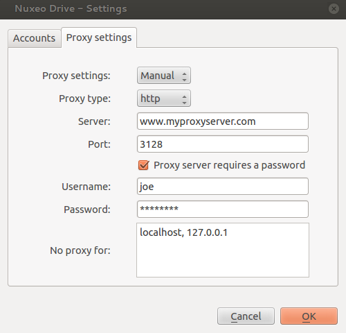
We also added the unified settings panel:

DAM
Customizable with Nuxeo Studio
Redesign from the ground up using ContentView, Layouts and widgets. It makes every part of DAM screen (search panel, result panel, asset view) easy to customize using Nuxeo Studio.
- Define the Left Hand Side with your own search layout
- Define the layout for the fields displayed in the thumbnail
- Define the Right Hand Side data for the selected asset (view/edit, as toggable layout)
- Define the Bulk-edit layout
- Define toolbar buttons, add your own
- Define the document types DAM can handle
Browse all Assets from the Repository
All the assets of the repository are displayed (not just the one under "Media Library")
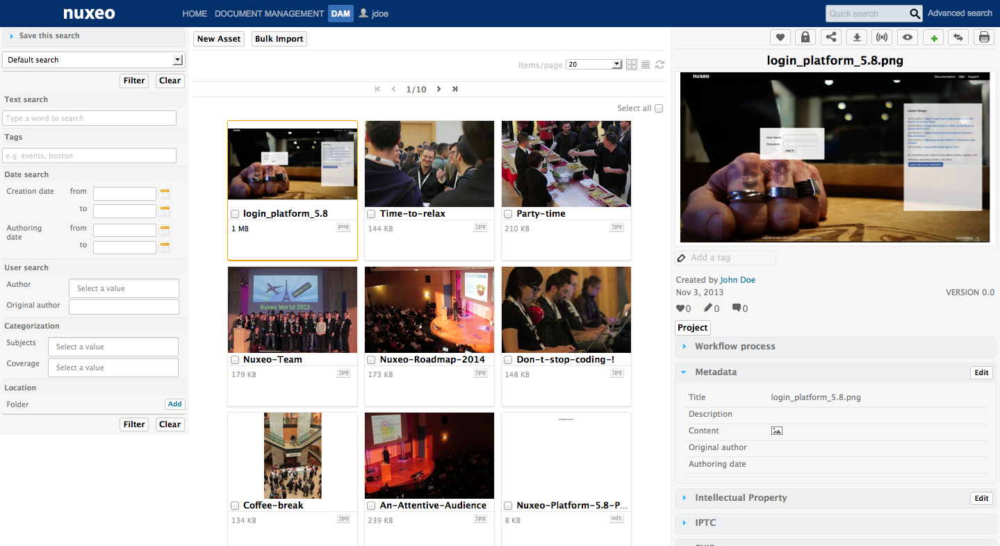
DAM Drag and Drop
You can now drag and drop as many assets as you want in the New Asset window: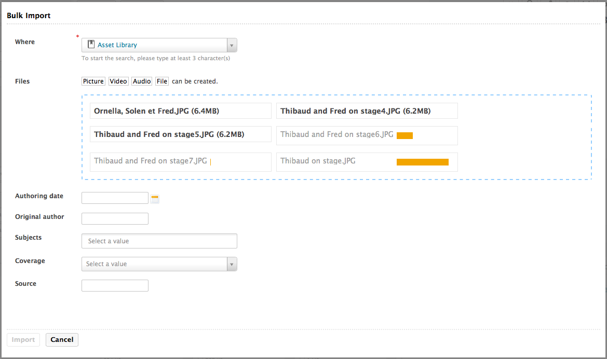
Assets Browsing
- "New Asset" button:
- Choose among appropriate document types with different metadata
- Import with D&D
- Also in "List" view
- New "Items/Page" dropdown
- New "Refresh" button
- New "Select all" button
- New "Copy" button
- New "Add to worklist" button
Asset View
- New toolbar, with the following buttons:
- Like
- Lock
- Permanent link
- Follow
- Preview
- Add to worklist
- Go to DM view
- New "Tags" feature
- Multiple tags
- Click on a tag to display the list of assets using it
- New "Creator/LifeCycle/Version" display
- New count of people who liked the document
- Smart "Comments" group: Displayed only if there is at least one comment
- Access to workflow actions directly from the DAM UI
Bulk Tagging
In the bulk edit form, you can now add tags to the selected list of documents.
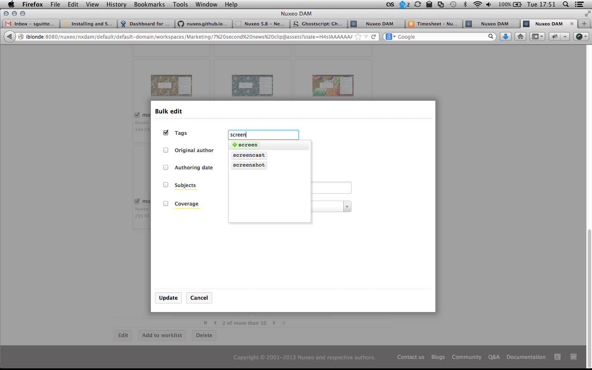
Asset Creation
When creating a new asset or bulk importing assets, you can choose the location where to import them. Only the folders where the user has the create permission are selectable.
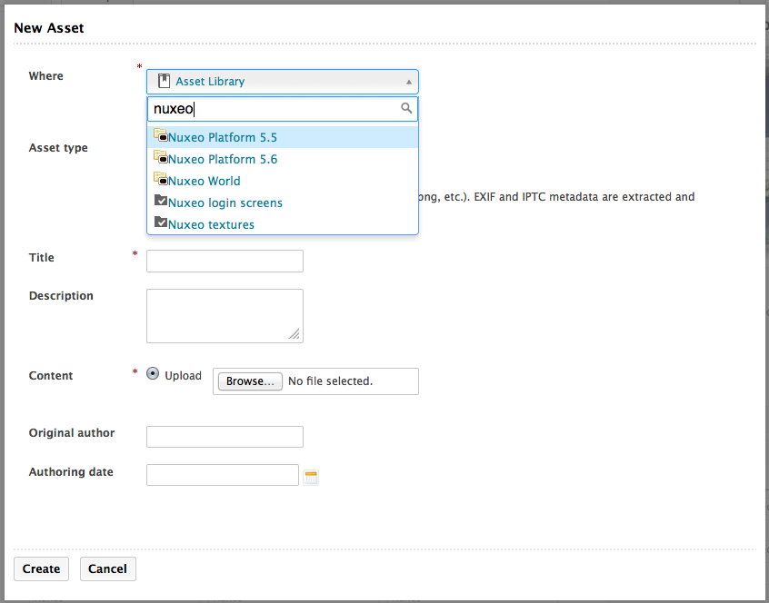
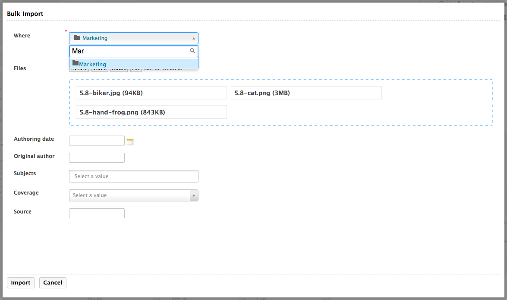
Assets View
The view or edit layouts configured on the Document types (the ones you can configure on your own document type on Studio for instance) are displayed in the Metadata section.
Single Asset View
Improve the single asset view of an asset (new layout accessible through the permalink).
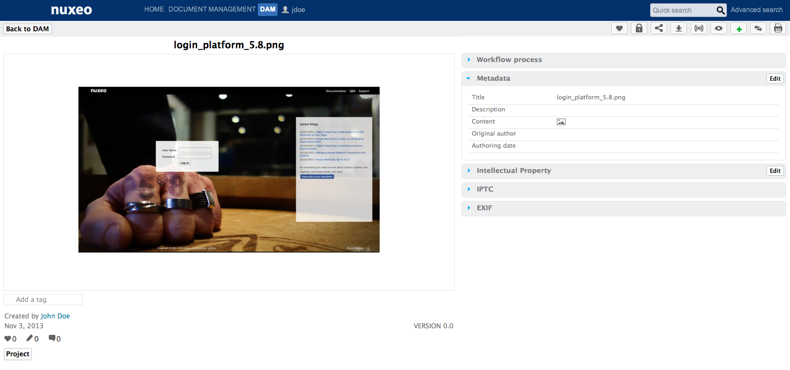
Misc Improvements
Now you can use the HTML5 DnD on the Bulk import form.
If your import fails for some reason (for instance, if you forgot to fill a required field), you get an appropriate error message and you don't have to select DnD files to import again.
Workflow
A main workflow tab can be enabled to list running workflow tasks. This way you can select several tasks, and hence do bulk validation.
Content routing prefetch has been made more efficient, which improves performances.
Redirect user when she has no more rights to read the document after changing the state of the workflow.
Filter system workflow related documents from search.

Escalation Rules
Escalation rules let you run an operation chain when a condition is true. These conditions are evaluated every 5 minutes by a configurable scheduler. They can be executed one time (default behaviour) or multiple times.

Sub-Workflow
We have added a new node called SubWorkflow. As you have already guessed it, it lets you embed sub-workflow into existing one. You can also give them parameters, escalation rules, input and output chains, and transitions, like a regular node.

Exclusive Node
When the workflow engine runs an exclusive node, it evaluates the transitions one by one and stops at the first one evaluated to true.
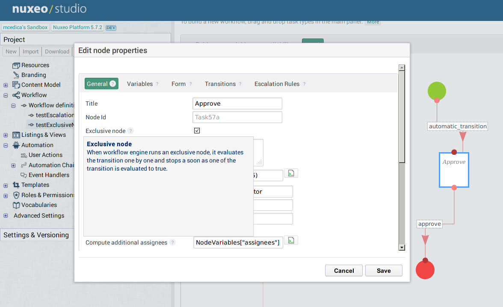
New Workflow Operations
We've added new operations to cancel a workflow, resume a node, get the opened tasks, and complete a task and also improved the Start Workflow and Set Workflow variable operations.
New Workflow Tab
We have a new workflow tab that lets the user see all his assigned tasks at once and filter them.
Task Reassignement
Workflow tasks can now be reassigned to someone else.
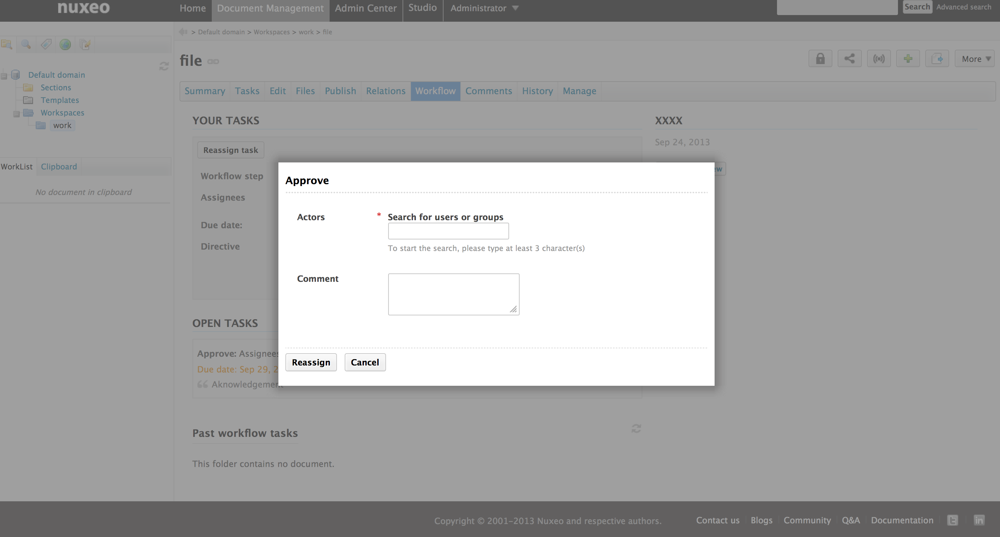
MultiTask Workflow Node
We have introduced a new option that creates a different task per assignee.
Workflow Graph Visualization
The workflow graph can be visualized as it has been created in Studio.

We now have a task resolution screen. It's a dedicated screen to solve one of your task and stay focus on the workflow.

A workflow can be applied on multiple documents.
We added a parallel review workflow:
- First step, choose the participants
- Second step, every participants give their feedback.
- Third step, we present a summary of the 2nd step and the assignee can validate or reject the document.
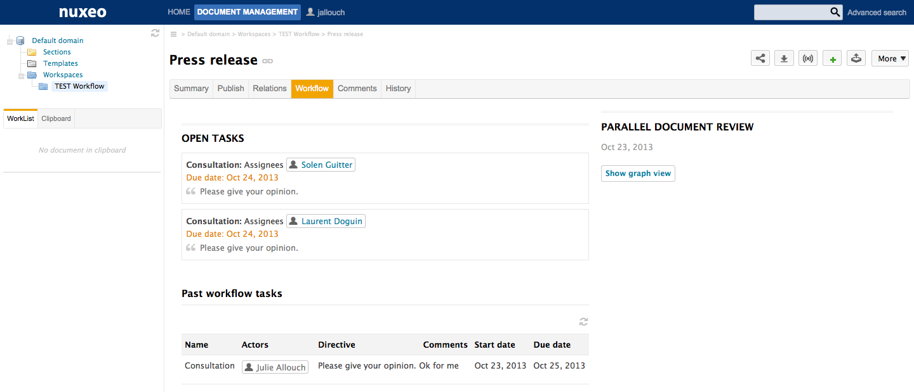
Mobile
A new application based on Apache Cordova, bringing multi-OS support. It can be used as a framework to build your own mobile application based on Nuxeo. Using Nuxeo Webengine and JQuery Mobile, it proposes the following features: Saved search, browsing, upload and download of documents, integration with native phone API.
CSV Importer
We have a new module allowing import of documents from a CSV file (1). Here's how it works: click on Import a CSV, choose the CSV file, click on import and documents will be created using properties from the CSV (only scalar metadata).
You can specify a folder in Nuxeo.conf where the importer will look for binaries. Just make sure you put their relative path in the CSV.

User Experience
The platform screens have been redesigned and improved. More than eighty issues about the user experience, user interface and styles have been resolved.
Safe Edit: Never loose your Forms
When editing a document, if the user tries to exit a page with unsaved changes then a popup window asks him if he really wants to leave the page (and if so discard the changes) or if he wants to stay on the page.
Where supported (i.e. localstorage available in the browser), a modification in the edited form triggers the autosave mechanism which records the new input values of the form. If the editing is accidentally lost (e.g. system / browser crash, network failure, etc ...), then the next time the user edits the page, the previous modifications will be detected from the local storage and the user will be asked whether to restore them or not.
Bulk Edit in listing
We have enabled Bulk Editing for document listing. It's now easy to show a form in a popup, displaying any layout you want, and that applies to documents you've selected.

Content Thumbnails
Thumbnail can be automatically generated for pdf or image documents using the main file of a document. It's also possible to contribute a thumbnail adapter for a specific document type or Facet. This is useful mainly for files other than pictures.
The generation of these thumbs is asynchronous, thanks to the use of workers. There is also a default placeholder showed when the generation isn't finished, or if Nuxeo could not generate the thumb.
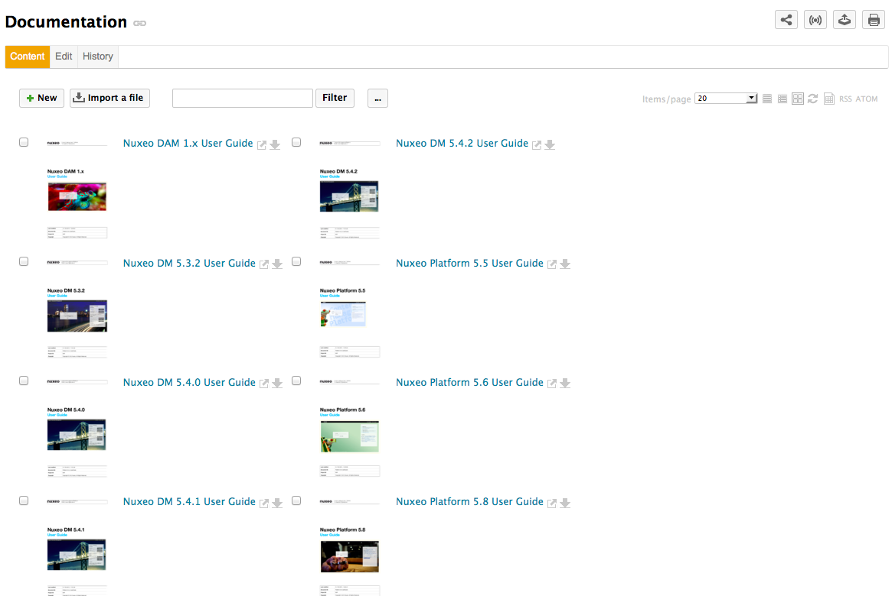
Back Navigation
We've enhanced the back navigation of your browser using HTML5 pushState.
Permlink available for any Asset
Every Asset now has an accessible and sharable permlink for you to share.
Select2 Integration
We have replaced the old selection/suggestion JSF widgets by select2 based widgets. Not only does it look better but it's also easier to customize. You can easily setup a user suggestion widget that filter search query with a group parameter.
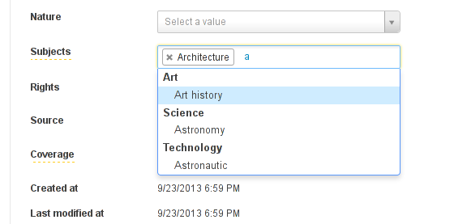
We also introduced new suggestion widgets on directories. They support n-level chained vocabularies out of the box.
SessionTimeOut Feedback
Users see a 'session expired' message when their session expires.
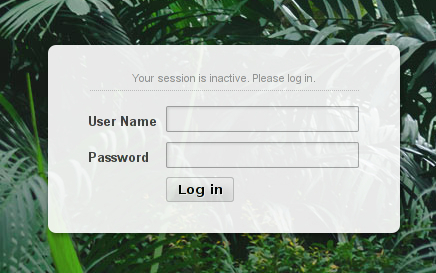
Form Submit Shield
This will protect the heavy handed crazy clickers to have errors because they have clicked on the same button fifty times in two seconds. The user will receive a feedback message telling them the request is being processed. It's better for his mouse and the server. You can deactivate it through the nuxeo.jsf.enableDoubleClickShield property in nuxeo.conf.
Tag to Version
When a version of a document is created, the tags on the master document are copied to the new version.
Redesigned Error Page
We have redesigned the legacy error page to have something cleaner, with a user-understandable error message.

Rich Text Widget
When using the rich editor and text, xml or markdown, we've added a Toggle Fullscreen button that displays the editing window in a fancybox. It makes it easier to see what you're doing.

Access Keys
We have added new access key binded to actions. Try maj-h, you'll see the different access keys available. Use ctrl-maj E to go to the Edit tab for example.

New Icons
We have updated all the icons throughout the platform.
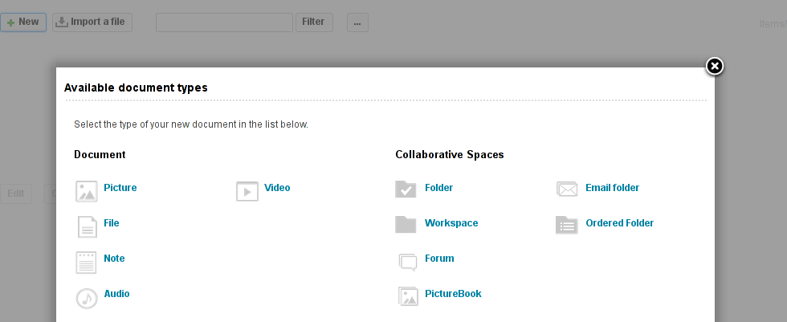
Style Update
Tables, forms and layout have been reviewed and simplified, feedback messages are now closable, and the tab key navigation has been improved for greater accessibility: a visible focus has been added to simplify the fill of inputs and make the document edition smoother.
Search
Use Tags in Searches
You can now add tags in your search form. Whether you're using the advanced search form, any faceted search, a content view query or a query operation. It works because we've added tag suppport to NXQL.
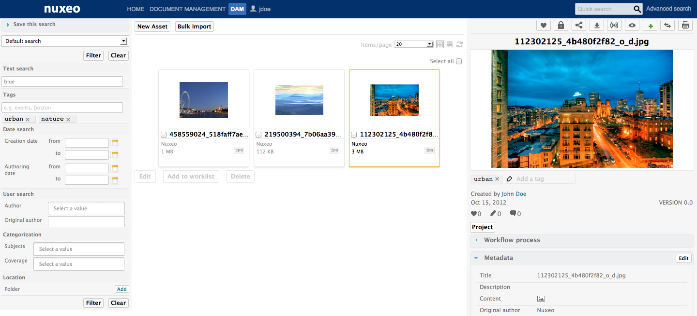
Saved Search Managment Tab
Every saved search is listed on a home tab, a subtab for dam, a subtab for faceted search. You can share those saved searches with other users using the manage/rights tab.

Search Panel
- Search criteria can be saved
- Search layout re-organized for better user friendly interface
- Search is triggered when user clicks "Filter" or "Clear"
- Rename "Keywords" with "Text Search"
- Search by location renamed
- New search by tags
- New search by creation date
- New search by author
- New search by original author
- Search by subjects with a new, better, interface
- Search by coverage with a new, better, interface
Quota
We've made many improvements in the Quota Marketplace package.
Global Quotas Activation, Quotas can be activated in the admin center
Once it's activated, everything statistical are automatically computed.

Administrators can see (in Manage > Quotas > Stats) the following statistics :
- Total volume used (deleted, live, versions) + "/Available space"
- Volume used by deleted files (trash)
- Volume used by archived versions
A graphical representation of those 3 statistics.
A content view with the title "Sub Folders" with the listing of subfolders
- Columns Title, do:Modified, Last Contributor, and Size
- Buttons Delete and Add to cart (to cut/paste)
Return meaningful error message when encountering a Quota error

User Workspace Quota Management Activation
As the Administrator of the system, you can enable Quota on user workspaces (radio button) with a default value (slider). The value is the same for all the user workspaces.
Quota processing now uses its own work queue.
Issues ListBIRT
Marketplace PackageThe BIRT Connector has been aligned on BIRT 4.2.2. It means that you can create your report in BIRT Designer 4.2.2. We also made some significant ergonomy enhancements on the admin center UI and we've added parameter validation when generating a report.
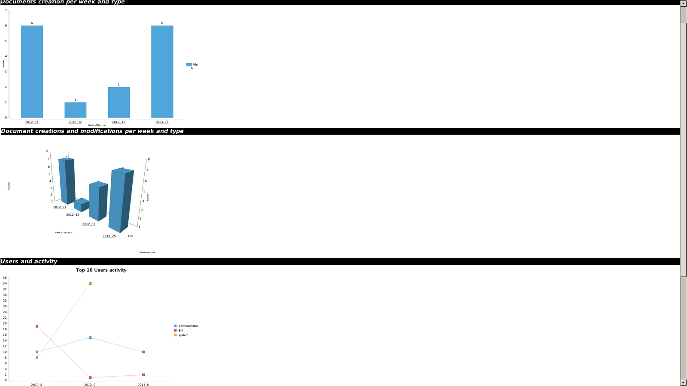Jenkins Report Module
We have a new module available in the marketplace. It's an integration between Jenkins and Nuxeo that we use internally. It helps us keep track of our CI, see it's evolution and easily send a report of the state of the CI to our developers. Here's an example of the email we receive:Hello devs! Here's a status of our CI main jobs on Jenkins. Current number of failing jobs: 3. Current number of unclaimed jobs: 1. Duty comments: To see the complete report click here. Cheers!
Video
The video.js player has been updated to version 4.2.2. This will enable us to benefit from their new plugin architecture. The first plugin we've integrated shows thumbnails of the video while hovering on the progress bar.
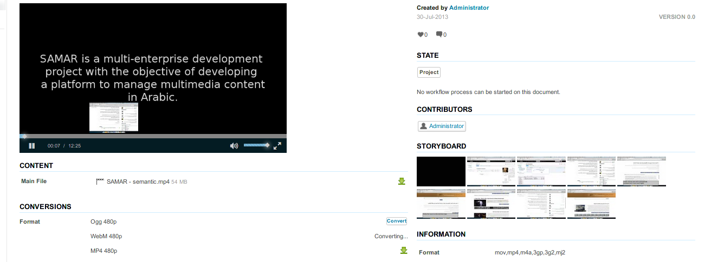
Translations
Some contributions have been integrated to Nuxeo. Thanks to Patrick Turcotte for the French (Canada) translation, to CapGemini Nl for Dutch and to Jordi Mallach for the Catalan translation.